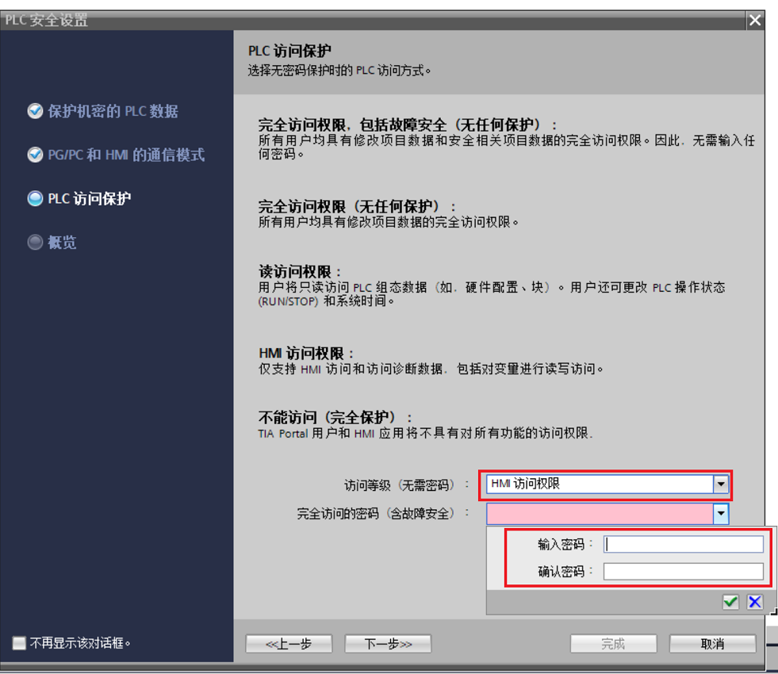

使用安全向导进行 PLC 安全设置¶
自 TIA Portal V17 起，新增了安全向导用于帮助客户快速进行安全相关的设置。
安全向导包括四个部分：
保护机密的 PLC 数据
PG/PC 和 HMI 通信模式
PLC 访问保护
概览
版本要求¶
软件版本要求： TIA V17 及以上版本
CPU 固件版本要求： V4.5 及以上版本
组态步骤¶
使用 TIA V17 及以上版本新添加固件版本 V4.5 及以上 S7-1200 CPU 时，默认会跳出安全向导。可按照以下步骤进行安全向导的组态设置：
1. 添加固件版本 V4.5 及以上的 S7-1200 CPU¶
{kind=link}
图 1 添加 CPU
2. 设置保护机密的 PLC 数据¶
① 如图 2 所示，点击【设置】按钮，进入密码设置窗口
{kind=link}
图 2 保护机密的 PLC 数据
② 如图 3 所示，按照密码复杂性要求填写保护密码
默认的密码复杂性要求如下：
最短密码长度：8
数字字符最小数目：1
特殊字符最新小数目：0
至少一个大写字母和一个小写字母
{kind=link}
图 3 密码设置
注意：设置的密码有复杂性要求，密码的复杂性要求可从以下设置中查看修改
如图 4 所示，在项目树中，导航至区域"安全设置 > 设置 > 密码策略" 区域。
{kind=link}
图 4 密码策略
3. 设置 PG/PC 和 HMI 的通讯方式¶
PG/PC 和 HMI 通信模式允许使用 PLC 通信证书来保护 CPU 与其它设备（HMI 或者 TIA PORTAL 软件等）之间的通信。当所有设备均支持安全通信时为了提高系统安全性推荐勾选【仅支持 PG/PC 和 HMI 安全通讯】，如果需要与不支持安全通信的设备进行通信，例如 HMI 的版本低于 V17，请取消选择"仅允许安全 PG/PC 和 HMI 通信"，此时 PLC 运行在混合模式，既支持安全通讯也支持传统的通讯方式。\
{kind=link}
图 5 设置 PG/PC 和 HMI 安全通信
4. 设置 PLC 访问保护¶
为了实现整体安全性，建议设置 PLC 的访问保护等级， 此访问级别组态与设备组态中的相同。相关说明请参考 S7-1200 CPU 保护。
{kind=link}
图 6 设置 PLC 访问保护
5. 生成概览¶
在向导最后一步生成 PLC 安全设置的概览。

图 7 生成 PLC 安全设置概览
常见问题¶
1. 完成安全向导后第一次下载程序报错¶
在完成安全向导后，如果设置了保护机密 PLC 组态数据密码，则在第一次下载时项目到 PLC 时会提示输入密码，该密码为组态的保护机密 PLC 组态数据密码，必须严格一致。
{kind=link}
图 8 初次下载界面
2.不小心退出安全向导如何继续完成防护与安全设置¶
如图 9 所示，如果不小心退出了安全向导，导致安全配置没有完成，可以在通过 CPU 属性的【常规】->【防护与安全】->【启动安全向导】重新启动向导。也可以不使用向导，在【防护与安全】下面的相关子项里分别进行组态。
{kind=link}
图 9 防护与安全组态
3. 如何取消添加 CPU 时自动跳出安全向导¶
如图 10 所示，对 TIA V17 及以上软件，在项目中新添加固件版本 V4.5 及以上固件 CPU 时会自动弹出安全向导 ，如要取消自动弹出，可在TIA 的【项目】->【设置】中勾选【添加 PLC 后，该 PLC 的安全设置不显示】。
{kind=link}
图 10 PLC 安全的默认设置